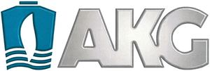

Trade Mark Journal No.2025/013 28 March 2025
WO0000001830433 (7,9,11,12)
Office of origin: Germany
Date of International Registration:2 February 2024
Date of designation in the UK:
2 February 2024

The mark contains the colours blue, grey and white.
- Class 7
- Radiators, cooling modules and cooling systems mainly consisting thereof for engines; radiators, cooling modules and cooling systems mainly consisting thereof for construction machinery; heat exchangers as machine parts; oil coolers for engines and motors and installations and systems consisting thereof; heat exchangers for land vehicles, water vehicles and rail vehicles; accessories and spare parts for the aforementioned goods.
- Class 9
- Condensers; radiators, cooling modules and cooling systems being parts of electrical and electronic components; software and downloadable apps for radiators, cooling modules and cooling systems, heat exchanger, air coolers, water coolers, cooler coolants, oil coolers, convectors, absorbers and evaporators for heat pumps; measuring apparatus and instruments; electric regulating apparatus; electric and electronic control apparatus and instruments; all aforementioned goods for use with radiators, cooling modules and cooling systems, heat exchanger, air coolers, water coolers, cooler coolants, oil coolers, convectors, absorbers and evaporators for heat pumps; coolers, cooling modules and cooling systems consisting mainly of these products, all of them being parts of or used with solar energy generating installations; accessories and spare parts for the aforementioned goods.
- Class 11
- Electric and cryogenic coolers and cooling appliances and installations; electric or cryogenic coolers, cooling modules and cooling systems consisting mainly of thereof, all of them used in assembly with transformers; electric or cryogenic coolers, cooling modules and cooling systems consisting mainly of thereof, all of them used in assembly with generators; air coolers and installations and systems consisting thereof; water coolers and installations and systems consisting thereof; cooler coolants and installations and systems consisting thereof; convectors; heat exchangers, not as part of machines; heat pumps parts, namely absorbers and evaporators; accessories and spare parts for the aforementioned goods.
- Class 12
- Coolers, cooling modules and cooling systems consisting mainly of these products, as structural parts for land vehicles, water vehicles and rail vehicles; heat exchangers as parts of motors for land vehicles; accessories and spare parts for the aforementioned goods.
AKG Verwaltungsgesellschaft mbH
Representative: Patent- und Rechtsanwälte Loesenbeck, Specht und Dantz, Am Zwinger 2, 33602 Bielefeld, GERMANY